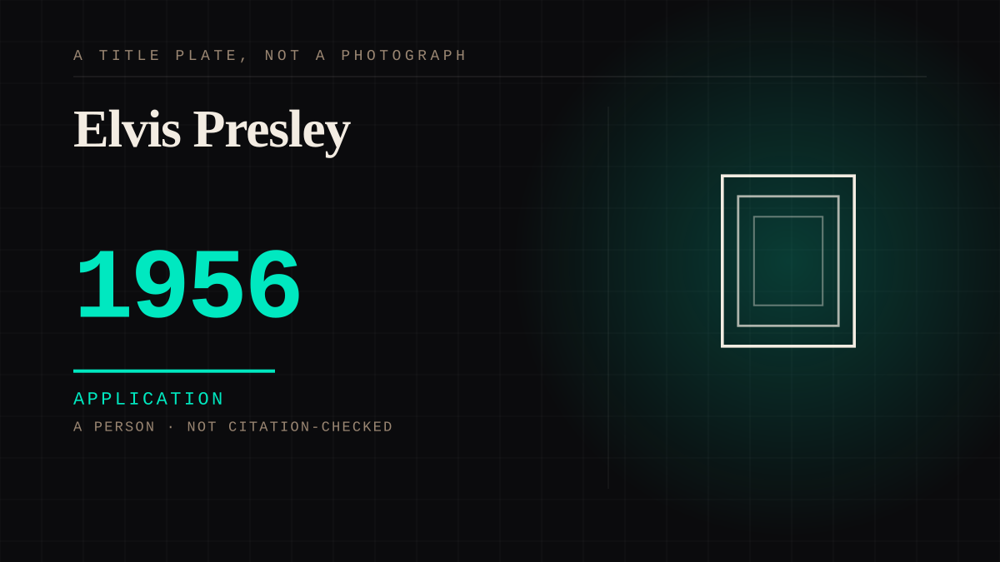

A person · 1956 · First contact
Elvis Presley
A national simultaneous viewing event, and an industry that learned within two years that the appeal was not the music.

The founding demonstration that a parasocial bond can be manufactured deliberately, at scale, for commercial return. The Colonel Tom Parker apparatus is the first parasocial persuasion machine.
Application. One-sided attachment put to work on purpose. Creator economies, community, fandom as infrastructure, and the things that genuinely help people. Not automatically good - a tool with an obvious use is a tool that will also get a bad one.
Manipulation. One-sided attachment engineered for somebody else's benefit. Paid intimacy, parasocial persuasion, sasaeng, grief extraction, the streak. The lane that pays the bills and the lane that causes the most harm, frequently at the same time.
Where it sits
1950 1950-1999 · 1956 1999
Provenance · 1 source record(s)
- needs-sourceNo specific claim is recorded against this source. The record is a pointer to the work in general; the entry's own prose is the argument and is not sourced line by line.No source identified yet. The seed note this entry was carrying named the entry's own subject rather than a reference, so it has been withdrawn rather than left to read as a citation.
Connected · 3 out, 4 in
It sits in